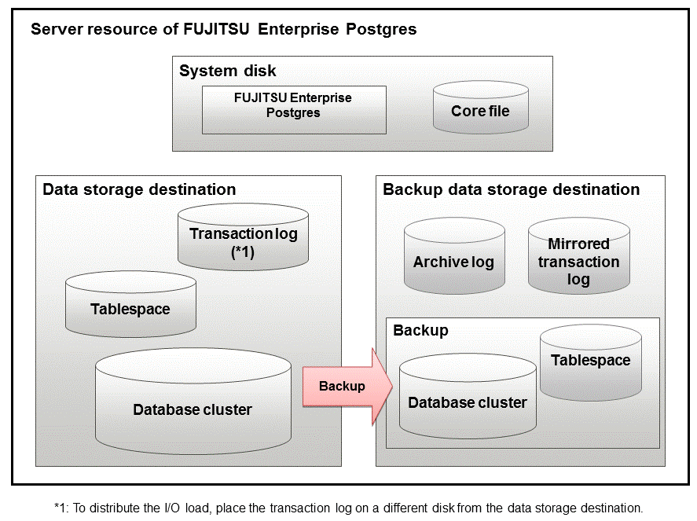

Prepare the directories required when creating instances.
Considerations when deploying resources
The disk configuration on the resource deployment destination is important, because it affects not only recovery following disk corruption, but normal operation as well. The points for determining the disk configuration are as follows:
If the backup data storage destination and the data storage destination are both lost, it will not be possible to recover the data, so deploy them to separate disks.
To shorten the recovery time following a single disk fault, deploy the system disk and data storage destination to separate disks.
The backup data storage destination requires at least double the capacity of the data storage destination, so deploy it to the disk with the most space available.
When large amounts of data are updated, the write-to load for the data storage destination, transaction log storage destination, and backup data storage destination (mirrored transaction log) will also be great. For this reason, deploy them to separate disks, out of consideration for performance.
Note
When using the volume manager provided by the operating system, be aware of which physical disk the file system has been created on, for example, by deploying the data storage destination and the backup data storage destination to separate disks.
If using WebAdmin, specify an NTFS volume for the data storage destination and backup data storage destination. A network drive cannot be specified.

Resource | Role |
|---|---|
Database cluster | The area where the database is stored. It is a collection of databases managed by an instance. |
Tablespace | Stores table files and index files in a separate area from the database cluster. Specify a space other than that under the database cluster. |
Transaction log | Stores log information in preparation for a crash recovery or rollback. This is the same as the WAL (Write Ahead Log). |
Archive log | Stores log information for recovery |
Mirrored transaction log (mirrored WAL) | Enables a database cluster to be restored to the state immediately before an error even if both the database cluster and transaction log fail when performing backup/recovery operations using the pgx_dmpall command or WebAdmin. |
Corefile | FUJITSU Enterprise Postgres process corefile output when an error occurs with a FUJITSU Enterprise Postgres process. |
The following are examples of disk deployment:
Number of disks | Disk | Deployment |
|---|---|---|
3 | System disk | FUJITSU Enterprise Postgres program |
Corefile | ||
Connected physical disk | Data storage destination, transaction log storage destination | |
Connected physical disk | Backup data storage destination | |
2 | System disk | FUJITSU Enterprise Postgres program |
Corefile | ||
Data storage destination, transaction log storage destination | ||
Connected physical disk | Backup data storage destination |
To generate an instance using WebAdmin, we recommend an optimum deployment that takes into account the status of all disks at the time of instance generation, and items 1 to 3 in the "Considerations when deploying resources" subheading above, based on the limitations below (note that a different deployment can also be specified).
The instance administrator has read and write privileges for the volumes.
Preparing directories
The directories to be prepared depend on the way that you create the instances.
The following shows the directories that need to be prepared:
Directory to be prepared | Using WebAdmin | Using the initdb command |
|---|---|---|
Data storage destination | Y *1 | Y |
Backup data storage destination | O *1 *4 | O |
Transaction log storage destination | O *1 *2 | O |
Corefile output destination | N *3 | O |
Y: Required
O: Optional
N: Not required
*1: WebAdmin automatically creates a directory
*2: The default is to create in a directory in the data storage destination. When it is necessary to distribute the I/O load for the database data and the transaction log, consider putting the transaction log storage destination on a different disk from the data storage destination
*3: The corefile path is as follows:
userProfileFolder\localSettingsFolder\Fujitsu\fsep_version\instanceNamePortNumber\core
version: product version_WA_architecture
Note: The product version is normally the version of WebAdmin used to create the instance. For example, WebAdmin 13 allows a user to create a FUJITSU Enterprise Postgres 9.6 instance on a database server having WebAdmin 9.6. In this case, because WebAdmin 9.6 is used to create the instance, the product version will be "96".
PortNumber: port number specified when creating the instance
Example
C:\Users\naomi\AppData\Local\Fujitsu\fsep_130_WA_64\myinst27599\core
To change the output destination, specify in the core_directory parameter and core_contents parameter in postgresql.conf. Refer to "Parameters" in the Operation Guide for information on the settings for these parameters.
*4: This directory is required when instance backup is enabled.
Note
The directories must meet the following conditions:
The directory owner must be the OS user account that you want to be the instance administrator
The directory must have write permission
The directory must be empty
If using WebAdmin, network drives cannot be used.
If using WebAdmin, the following halfwidth characters can be used for directory names:
\(backslash)
- (hyphen)
_ (underscore)
: (colon)
Space
A-Z, a-z, 0-9 (alphanumeric)
If anti-virus software is used, set scan exception settings for folders so that none of the server resources that comprise FUJITSU Enterprise Postgres are scanned for viruses. Alternatively, if the server resources that comprise FUJITSU Enterprise Postgres are to be scanned for viruses, stop the instance and perform the scan when tasks that use FUJITSU Enterprise Postgres are not operating.
Confirm and configure directory access permissions
If the instance administrator user has "Administrator" permissions (user ID belonging to the Administrators group), it is necessary to configure the settings so that each directory inherits the file and directory access permissions for the instance administrator user.
Therefore, ensure that the setting to inherit permissions has been configured.
The following is an explanation on how to confirm and configure the settings.
Perform the following operations in Windows Explorer on the directories to be prepared in advance:
Right-click on the applicable directory, and then click [Properties] from the menu that is displayed.
In the [applicableDir Properties] window, select [Security] >> [Advanced].
In the [Advanced Security Settings for applicableDir] window, and in the [Permission entries] list under the [Permissions] tab, confirm that [Applies to] for the instance administrator user is "This folder, subfolders and files".
Click [OK].
Perform the following operations in Windows Explorer if there are any directories that have not been configured for the access permissions to be inherited.
Right-click on the applicable directory, and then click [Properties] from the menu that is displayed.
In the [applicableDir Properties] window, select [Security] >> [Advanced].
In the [Advanced Security Settings for applicableDir] window, click [Add].
In the [Permission Entry for applicableDir] window, click [Select a principal].
In the [Select User or Group] window, enter the instance administrator user name as the object name to select, and then click [OK].
In the [Permission Entry for applicableDir] window, set [This folder, subfolders and files] for [Apply to:] ([Applies to:] for Windows Server(R) 2016 and Windows Server(R) 2019), and under [Basic permissions], allow read and write permissions, and then click [OK].
In the [Advanced Security Settings for applicableDir] window, confirm that the instance administrator user has been added, with [This folder, subfolders and files] set for [Apply to] ([Applies to] for Windows Server(R) 2016 and Windows Server(R) 2019) in the [Permission entries] list.
Click [OK].
Information
The access permissions can also be configured using the icacls command provided by the operating system.
The following is an execution example in which the application destination is set to "(OI)(CI)" and the access permissions are set to "(F)(Full access permissions)" when the data storage destination is "D:\database\inst1" and the instance administrator user is "fsepuser":
>icacls D:\database\inst1 /grant fsepuser:(OI)(CI)(F)processed file: D:\database\inst1Successfully processed 1 files; Failed processing 0 files